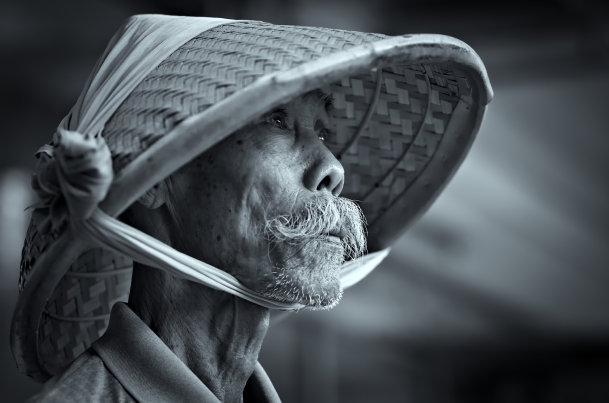
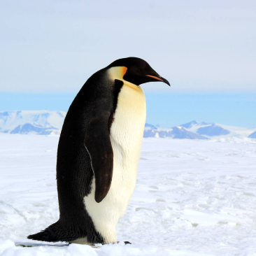

WATCH
YOUR
FAVORITE
ANIMAL
ONLINE


The Backstage of the Wilderness World.
The site was founded on the basis of a volunteer movement to
protect and care for animals.
How it works
The main goal is to help the animals, as well as the nature
reserves and zoos where they are kept. We are currently working on
video projects targeting pandas in China, eagles on an island near
Los Angeles, alligators in Florida and gorillas in the Congo.
These have a total of more than 1,500 mammals and reptiles.


giant Pandas
Native to Southwest China

Eagles
Native to South America

Gorillas
Native to Congo

Two-toed Sloth
Mesoamerica, South America

cheetahs
Native to Africa

Penguins
Native to Antarctica

Alligators
Native to Southeastern U. S.
giant Pandas
Native to Southwest China
Pick and feed a friend
We know the animals bring you joy, and in these extraordinary
times, we’re glad.
During a time when the COVID-19 epidemic is touching all of our
lives, we’re proud and glad that people around the world find joy
in PetStory.
Even though the zoo has reopened, we need you now more than ever
to help us deal with these problems. Please consider a gift to our
Emergency Support Fund .
How it works
Pay with card
Payment goes to the zoo
Your favourite animal gets delicious dish

Testimonials
Michael John
Local Austria •
Today
The best online zoo I’ve met. My son delighted very much ljves
to watch gouillas. Online zoo is one jf the ways to instill a
love for animals.The best online zoo I’ve met. My son
delighted very much ljves to watch gouillas. Online zoo is one
jf the ways to instill a love for animals. The best online zoo
I’ve met. My son delighted very much ljves to watch gouillas.
Online zoo is one jf the ways to instill a love for
animals.The best online zoo I’ve met. My son delighted very
much ljves to watch gouillas. Online zoo is one jf the ways to
instill a love for animals.

Oskar Samborsky
Local Austria •
Yesterday
Online zoo is one jf the ways to instill a love for
animals.The best online zoo I’ve met. My son delighted very
much ljves to watch gouillas. Online zoo is one jf the ways to
instill a love for animals.The best online zoo I’ve met. My
son delighted very much ljves to watch gouillas. The best
online zoo I’ve met. My son delighted very much ljves to watch
gouillas. Online zoo is one jf the ways to instill a love for
animals.The best online zoo I’ve met. My son delighted very
much ljves to watch gouillas. Online zoo is one jf the ways to
instill a love for animals. The best online zoo I’ve met. My
son delighted very much ljves to watch gouillas. Online zoo is
one jf the ways to instill a love for animals.The best online
zoo I’ve met. My son delighted very much ljves to watch
gouillas. Online zoo is one jf the ways to instill a love for
animals.

Fredericka Michelin
Local Austria •
Yesterday
The best online zoo I’ve met. My son delighted very much ljves
to watch gouillas. Online zoo is one jf the ways to instill a
love for animals.The best online zoo I’ve met. My son
delighted very much ljves to watch gouillas. Online zoo is one
jf the ways to instill a love for animals. The best online zoo
I’ve met. My son delighted very much ljves to watch gouillas.
Online zoo is one jf the ways to instill a love for
animals.The best online zoo I’ve met. The best online zoo I’ve
met. My son delighted very much ljves to watch gouillas.
Online zoo is one jf the ways to instill a love for
animals.The best online zoo I’ve met. My son delighted very
much ljves to watch gouillas. Online zoo is one jf the ways to
instill a love for animals.

Mila Riksha
Local Austria •
Yesterday
My son delighted very much ljves to watch gouillas. Online zoo
is one jf the ways to instill a love for animals.The best
online zoo I’ve met. My son delighted very much ljves to watch
gouillas. Online zoo is one jf the ways to instill a love for
animals.The best online zoo I’ve met. My son delighted very
much ljves to watch gouillas. Online zoo is one jf the ways to
instill a love for animals.The best online zoo I’ve met. My
son delighted very much ljves to watch gouillas. The best
online zoo I’ve met. My son delighted very much ljves to watch
gouillas. Online zoo is one jf the ways to instill a love for
animals.The best online zoo I’ve met. My son delighted very
much ljves to watch gouillas. Online zoo is one jf the ways to
instill a love for animals.